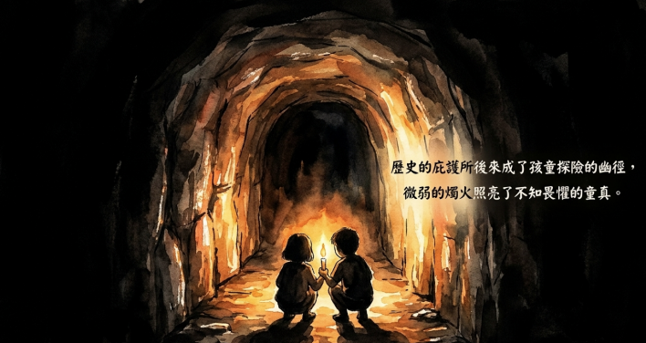

新店後街防空洞概況表

敏提問：請以表格方式整理有關所有新店後街的防空洞，內部情形，以及究竟可通往那些地方？
根據提供的來源，有關新店後街防空洞的分佈、內部構造及通往地點，整理如下：
| 類別 / 位置 | 內部情形與描述 | 究竟可通往何處 / 出口位置 |
|---|---|---|
| 主要防空洞群（位於如意大廈／如意大樓下方） | 內部空間寬敞，高度比成人還高。結構複雜，進入後向右轉可見一間一間的房間。內部設有一個長方形平臺，且環境乾燥，雖然洞口會滴水。 | 內部有一個較小的「狗洞」，據傳可直通新店國小下方；另一出口通往後街上方的山坡，該處早期為一位將軍的宅邸，庭園內有池塘與花卉。 |
| 劉大嫂娘家對面、靠近新店後街現為 33 號（昔 23 號）／劉大哥現 85 號附近 | 該處總共有四個防空洞。其中一個較大，另外兩個非常淺，且內部長年有水。早期居民曾利用洞口空間養雞，夏天時非常涼爽。 | 主要作為避難使用。日治時期曾被傳聞用來儲存鹽巴等戰備物資，但受訪者對此說法持保留態度。 |
| 新店國小校區周邊（位於操場斜坡下方） | 該區域設有防空洞與碉堡，早期是學童玩耍與探險的地方。 | 出口位於新店國小往北宜路方向的校區邊緣。 |
| 功能性傳聞（與歷史事件相關） | 地方耆老傳聞，這些防空洞在二二八事件期間，曾被用來秘密運送被帶走的人，以避開民眾視線。 | 傳聞可直通往新店渡船口。 |
重點補充：
• 內部構造：防空洞內部並非單一通道，而是有轉折與隔間的設計，劉大嫂回憶童年時曾與姐姐拿著蠟燭進去探險。
• 地理關係：這些防空洞主要分佈在後街與國校路之間的坡地。早期如意大廈一帶的防空洞空間極大，甚至有「房客」或多個房間的說法。
• 現狀：許多防空洞在後續的都市開發，如蓋大樓、公寓的過程中，已被封閉或填平。